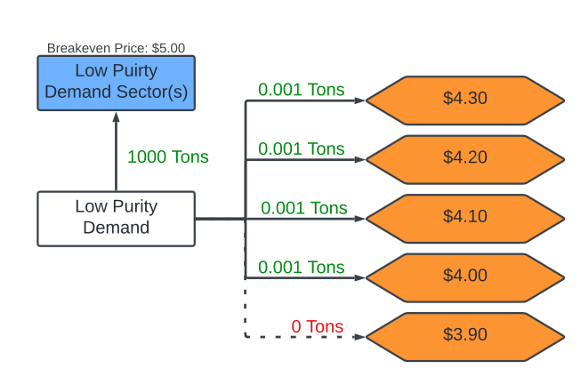

Network Formulation
HOwDI represents all potential pieces of hydrogen infrastructure as a network in an initial pre-processing step. The network is composed of nodes and edges that contain data pertaining to the piece of infrastructure being represented. A node may be a specific producer at a specific location, and it would contain data regarding the expenses associated with building the producer, the quality of hydrogen produced by the producer, the carbon emissions of the producer, et cetera.
A node may either be a producer node, consumer/demand node, or an intermediate node. Producer nodes may add hydrogen to the system, demand nodes may consume the system’s hydrogen, and all other nodes act as intermediate steps for transporting hydrogen around the system. These intermediate nodes may gather and distribute hydrogen from multiple other nodes while enforcing hydrogen mass balance. Edges transfer hydrogen between nodes, and some edges have costs associated when hydrogen is transferred.
A hub is a collection of nodes and edges that represents hydrogen infrastructure at a specific geographic location. A hub is not a model component; instead, it is a way of describing the connection a node has to the system being simulated. Hubs are selected by the user, and the model formulates the associated nodes and edges with that hub.
Term |
Description |
Model notation |
|---|---|---|
Node |
Model component used to define any piece of hydrogen infrastructure (e.g., a producer, point of distribution, or abstraction tool). |
\(n \in N\) |
Edge |
Connection between nodes that can transfer hydrogen. |
\(e \in E\) |
Center |
Non-physical node that gathers and distributes hydrogen. |
|
Hub |
Real-world location represented by many nodes. |
\(\omega \in \Omega\) |
A demonstration of the network generated for each hub is shown above. Low purity and high purity hydrogen and produced at low purity and high purity production nodes, respectively. A example of a low purity production node is a steam methane reformer, and an example of a high purity production node is an electrolyzer. These production nodes are shown in green.
The hydrogen produced at these nodes is transported without cost to low purity and high purity centers. These white nodes (centers) serve as a way to gather and distribute hydrogen from multiple local producer nodes. Hydrogen can be transported from the low purity center to the high purity center, but has to incur the costs associated with purification (the pink conversion node labeled “purification” actually sits between the low and high purity centers. High purity hydrogen can be transported to the low purity center at no cost.
Hydrogen at the low purity center can be transported to the white local low purity pipeline center, which again serves as a way to gather and distribute hydrogen from multiple related nodes. Low purity hydrogen can be sent or received through incoming or outgoing pipelines (at a dollar-per-distance cost) to and from (potentially multiple) other hubs at this center. Alternatively, the low purity hydrogen can be transported freely to the low purity demand center.
High purity hydrogen at high purity centers has similar options. The hydrogen can be transported to the local high purity pipeline center. At this center, hydrogen can be sent or received through incoming or outgoing pipelines to and from other hubs. High purity hydrogen can be transported to the low and high purity demand centers at no cost. It can be transported to the fuel station demand center by means of the pipeline fuel dispenser converter, which incurs a cost.
The hydrogen at the high purity center can also be distributed via truck. First the hydrogen is either liquefied and sent through a liquid terminal to the local liquid truck distribution center, or it is compressed and sent through a gaseous terminal to the local gaseous truck distribution center. The hydrogen can be sent to or received from other hubs by means of truck at these centers. Hydrogen at these centers can be sent to low purity demand, high purity demand, or fuel station demand centers. It does so at the cost of using a liquid or gas fuel dispenser.
At each demand center, hydrogen can be sent to a price node to determine the cheapest cost at which it can be delivered. Hydrogen at the demand center can also be sent to a blue demand sector node, where it is consumed. Multiple demand sector nodes may exist in a hub for a single demand center. For example, there may be two separate demand sectors for fuel station hydrogen. One sector may represent potential hydrogen consumers that are willing to pay a premium for low-carbon hydrogen, while another sector does not demand low-carbon hydrogen and will only pay a lower price.
Price nodes
In the model formulation, demand nodes are nodes that may choose to consume the system’s hydrogen. When these nodes consume hydrogen, they add capital to the system equal to the amount of hydrogen consumed times the maximum price they will buy hydrogen for (which we call “breakeven price”). This breakeven price is defined as the maximum price a specific consumer is willing to pay for hydrogen. For consumers that are not carbon-sensitive, this can be thought of as the price paid for the currently used fuel (as a hydrogen equivalent). For carbon-sensitive consumers, this is the current price plus the additional amount that is willing to be paid for a clean fuel source.
In the current state of the model, the each sector’s inputted breakeven price is the price they pay for hydrogen. However, the cheapest price at which hydrogen can be delivered is a desired output parameter. Thus, several price nodes are added to the system to determine the minimum price at which hydrogen can be delivered to a hub.
A price node is a node that demands an amount of hydrogen small enough such that the capital gained from consumption (price times amount consumed) has little impact on system-wide profit. Each price node for each demand sector in a hub has a different breakeven price. The lowest price, highest price, and step size between prices is determined by the user, such that the number of price nodes does not dramatically increase model runtime.
If the true lowest price at which hydrogen can be delivered is between the highest and lowest price node breakeven price, the model will only satisfy demand for price nodes with breakeven prices above the delivered price. Satisfying demand for prices lower than the delivered price would reduce system profits and would consequently be not optimal. The true cheapest delivered price is between the breakeven price’s of the cheapest price node that consumed hydrogen and the most expensive node that did not have its demand met.
The figure above is a demonstration of price nodes. Here, the model only chooses to meet the hydrogen demand greater than or equal to $4.00. It can be assumed that the delivered price of low-purity hydrogen at this hub is between $3.90 and $4.00.
The price nodes method serves as a step-wise approximation to a nonlinear term. Without price nodes, determining the cheapest price at which hydrogen can be delivered would require a bilinear term. This bilinear term would be the realized system profit from consumption, which is equal to the delivered price of hydrogen (a variable) times hydrogen consumption (another variable). Introducing a bilinear term would make the model nonlinear, and thus harder to solve.
The price nodes system is accurate if a demand sector consumes either all or none of the hydrogen it demands. If all the demand is met, the additional profit gained from the differential between the breakeven price and the lowest delivered price is not used to further develop system infrastructure. The inability of the system to consume more hydrogen means that no additional profit can be gained by upgrading system infrastructure. System profits may be greater, but the overall network will remain the same as long as the breakeven price is above the lowest delivered price.
On the other hand, if none of the demand is met, no profit is added to the system regardless of the breakeven price. The lowest possible delivery price is not determined by the model. It is assumed it is above the maximum price hub price.
However, if only a portion of the demand is met at a hub, the price node method becomes inaccurate. Since demand nodes are consuming hydrogen at a (breakeven) price higher than the lowest possible price hub price, more hydrogen could be consumed if the breakeven price were lowered. The consumption of more hydrogen means that more production would be built for the optimal system. Thus, the hydrogen network returned by HOwDI would not be accurate.
Since the model is linear, it is extremely unlikely that only a portion of the demand at a consumer/demand node would be met. The only case in which this could happen would be if constraints on maximum and minimum production or distribution capacity used to satisfy this demand prevented all of the demand from being satisfied. Even then, the unrealized profits from the difference between delivered price and breakeven price would probably not be realized as the capacity limits would prevent the growth of infrastructure.
HOwDI.model.create_network
This module contains functions for creating a hydrogen network from input CSV files.
- HOwDI.model.create_network.add_consumers(g: DiGraph, H)
Adds consumer nodes to the graph.
For each hub, there are arcs from the nodes that represent demand type (e.g., fuelStation, lowPurity, highPurity) to the nodes that represent different demand sectors (e.g., industrialFuel, transportationFuel). In practice, one could create multiple sectors that connect to the same demand type (e.g., long-haul HDV, regional MDV, and LDV all connecting to a fuel station)
- Parameters:
g (networkx.DiGraph) – A networkx.DiGraph object representing the hydrogen network.
H (HydrogenData) – A HydrogenData object containing data for the network.
- Return type:
None
Notes
The function loops through the hubs and demand sectors in H.hubs and H.demand, respectively, and adds nodes for each demand sector to the graph. It then connects each demand sector node to the corresponding demand node using a free flow dictionary.
If the demand value for a given demand sector is 0, no demand sector node is added to the corresponding hub.
- HOwDI.model.create_network.add_converters(g: DiGraph, H)
Routine that adds converter nodes to the graph.
Each converter is a node and arc that splits an existing arc into two.
- Parameters:
g (networkx.DiGraph) – A networkx.DiGraph object representing the hydrogen network.
H (HydrogenData) – A HydrogenData object containing data for the network.
- Return type:
None
Notes
The function adds a new node for the converter at the hub, and inserts the converter node between the “arc_start_class” node and the “arc_end_class” node. It also updates the flow values and adds the necessary edges to the graph.
The free_flow_dict function is used to create a dictionary with free (unlimited) flow values.
- HOwDI.model.create_network.add_price_nodes(g: DiGraph, H)
Routine that adds price nodes to the graph.
Each price is a node that has very little demand and a series of breakeven price points to help estimate the price that customers are paying for hydrogen at that node.
- Parameters:
H (HydrogenData) – A HydrogenData object containing data for the network.
g (networkx.DiGraph) – A networkx.DiGraph object representing the hydrogen network.
- Return type:
None
Notes
H.price_range is an iterable array of prices. The model will use this array of discrete prices as fake consumers. In the solution, the price of hydrogen at that node is between the most expensive “price consumer” who does not use hydrogen and the least expensive “price consumer” who does.
H.price_hubs is a list of the hubs where we want to calculate prices for. If it equals ‘all’, then all of the hubs will be priced.
H.price_demand is the total amount of pricing demand at each hub. This can be set to a higher value if you are trying to just test sensitivity to amount of demand.
- HOwDI.model.create_network.add_producers(g: DiGraph, H)
Routine that adds producer nodes to the graph.
Each producer is a node that sends hydrogen to a hub_lowPurity or hub_highPurity node.
- Parameters:
g (networkx.DiGraph) – A networkx.DiGraph object representing the hydrogen network.
H (HydrogenData) – A HydrogenData object containing data for the network.
- Return type:
None
Notes
The function loops through the hubs and producers to add the necessary nodes and arcs. For each producer, it creates a node representing the production facility and connects it to the corresponding hub node. The free_flow_dict function is used to create a dictionary with free (unlimited) flow values.
The function also adds existing producer nodes to the graph, which are represented by nodes with the suffix “Existing”. These nodes are connected to the corresponding hub node using a free flow dictionary.
- HOwDI.model.create_network.build_hydrogen_network(H: HydrogenData) DiGraph
Builds a hydrogen network from a HydrogenData object.
- Parameters:
H (HydrogenData) – A HydrogenData object containing data for the network.
- Returns:
A networkx.DiGraph object representing the hydrogen network.
- Return type:
networkx.DiGraph
- HOwDI.model.create_network.cap_first(s)
Capitalizes the first letter of a string without putting other letters in lowercase
- HOwDI.model.create_network.free_flow_dict(class_of_flow=None)
Returns a dict with free (unlimited) flow values
- HOwDI.model.create_network.initialize_graph(H: HydrogenData) DiGraph
Builds an initial hydrogen network from a HydrogenData object More detail is added in other routines.
- Parameters:
H (HydrogenData) – A HydrogenData object containing data for the network.
- Returns:
A networkx.DiGraph object representing the hydrogen network.
- Return type:
networkx.DiGraph
Notes